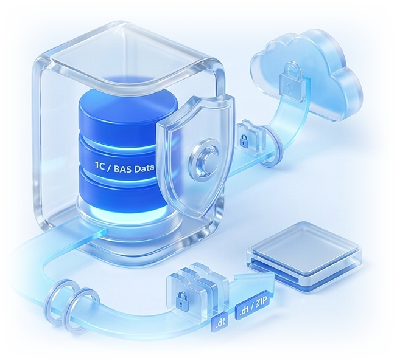
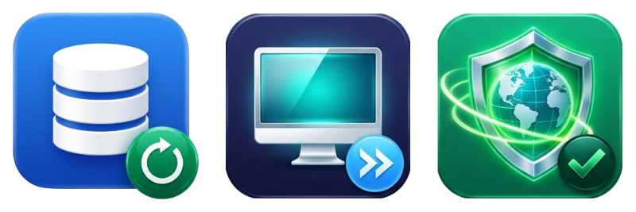
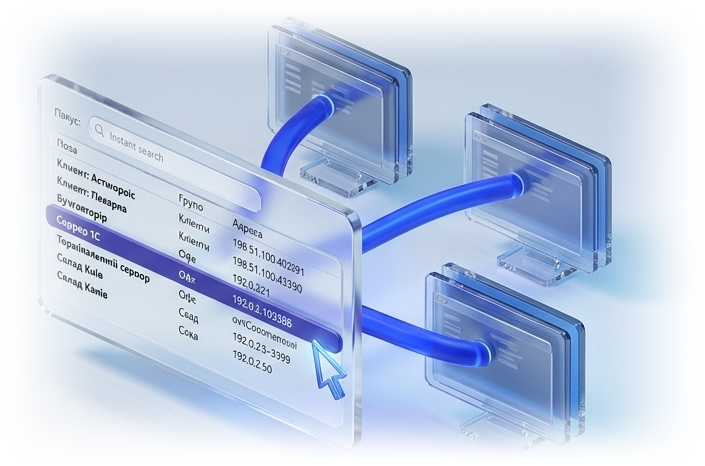

Бекапер
Служба Windows на сервері 1С: щоночі вивантажує бази в .dt, пакує в архів із паролем, розкладає по ваших сховищах і надсилає звіт у Telegram або на пошту.
500 грн за сервер · 30 днів безкоштовно
2int.com.ua
Автоматизуйте резервне копіювання баз 1С/BAS, зручно керуйте десятками RDP-підключень та захистіть сервер від підбору паролів і підключень з небажаних країн.


Служба Windows на сервері 1С: щоночі вивантажує бази в .dt, пакує в архів із паролем, розкладає по ваших сховищах і надсилає звіт у Telegram або на пошту.
500 грн за сервер · 30 днів безкоштовно

Усі ваші RDP-підключення в одному вікні — з назвами, групами й примітками. Знайдіть сервер за кілька літер і підключіться подвійним кліком.
Windows 10/11 · без прав адміністратора · паролі не зберігаються
Служба Windows для серверів із RDP: блокує підключення з країн поза дозволеним списком і IP після невдалих входів — на 30 хв, 2 год, назавжди. Звіти й керування — у Telegram.
Служба Windows · бот у Telegram